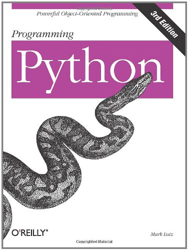
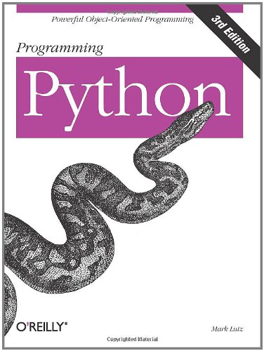
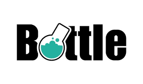
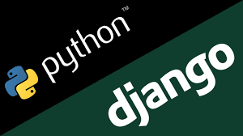

Python - Web

integrantes
Diego Raian
Eslei Elioterio
Igor Paim
Litiano Moura
Luan Menezes
Marcus Freire
Thiago de Oliveira
Roteiro
- Histórico
- Empresas conhecidas que utilizam
- Linguagem
- Frameworks
- Montagem do ambiente de desenvolvimento
- Desenvolvimento de um projeto
- Bibliografia

A História do Python
A Linguagem Python foi concebida no fim dos anos 80
"Percebi que o desenvolvimento de utilitários para administração de sistema em C (do Amoeba) estava tomando muito tempo. Além disso, fazê-los em shell Bourne não funcionaria por diversas razões. O motivo mais importante foi que, sendo um sistema distribuído de microkernel com um design novo e radical, as operações primitivas do Amoeba eram diferiam muito (além de serem mais refinadas) das operações primitivas disponíveis no shell Bourne. Portanto, havia necessidade de uma linguagem que "preencheria o vazio entre C e o shell". Por um tempo longo, esse foi o principal objetivo do Python." —Guido Van Rossum
A História do Python
A Linguagem Python foi concebida no fim dos anos 80.
1989 o desenvolvimento do Python realmente teve início.
O nome Python
 

Empresas conhecidas que utilizam
Linguagem
Informações Técnicas
Possui estruturas de dados de alto nível eficientes.
Abordagem simples e efetiva.
Programação orientada a objetos.
É ideal para script e para o desenvolvimento rápido de aplicações em diversas áreas e na maioria das plataformas.
Estruturas
Exemplo de Programação Orientada a Objetos : class Complex(object): def __init__(self, real, imag): self._real = real self._imag = imagAmbiente de Desenvolvimento
IEP (Interactive Editor for Python)
Pycharm
Geany
IronPython Studio
PyDev (Eclipse)
Frameworks
Frameworks existem para salvá-lo de ter que reinventar a roda e ajudam a aliviar a sobrecarga quando você está construindo um novo site.
Existem dois tipos de framework para pyhthon.
Fullstack
Microframework

O framework escolhido foi o Django
mas não esse Django...
O framework escolhido foi o Django
E sim esse Django...
Arquitetura Django
The Project Structure
- Root
- Settings.py
- sqlite3
- url.py
- model.py
- view.py
- inner folders
- __init__.py
Settings
Apresenta todas as configurações mais importantes do projeto, ao criar o projeto django através do “django-admin” é criado um arquivo de configuração padrão do projeto:
- Allowed Hosts
- TIME_ZONE
- DATABASES
- TEMPLATE
- INSTALLED_APPS
- ROOT_URLCONF
- STATIC_URL
- STATICFILES_DIRS
What's Models
O model, concentra todas as informações de dados,manipulação do comportamento dos campos que estão sendo salvos e regras de negócio, camada responsável também por concentrar as informações de ORM.
ORM
from django.db import models class Person(models.Model): first_name = models.CharField(max_length=30) last_name = models.CharField(max_length=30) ------------------------------------------------------------------------- CREATE TABLE myapp_person ( "id" serial NOT NULL PRIMARY KEY, "first_name" varchar(30) NOT NULL, "last_name" varchar(30) NOT NULL );
Fields
class Musician(models.Model): first_name = models.CharField(max_length=50) last_name = models.CharField(max_length=50) instrument = models.CharField(max_length=100)
class Album(models.Model): artist = models.ForeignKey(Musician, on_delete=models.CASCADE) name = models.CharField(max_length=100) release_date = models.DateField() num_stars = models.IntegerField()
Exemplos
Example views.py:
from django.http import HttpResponse
from django.views import View
class MyView(View):
def get(self, request, *args, **kwargs):
return HttpResponse('Hello, World!')
Example urls.py:
from django.conf.urls import url
from myapp.views import MyView
urlpatterns = [
url(r'^mine/$', MyView.as_view(), name='my-view'),
]
Templates
- {{ VARIÁVEIS }}
- {% TAGS %}
- {{FILTROS | XXX }}
- { #COMENTÁRIOS #}
- HERANÇA
- {% block title %} {% endblock %}
- {% extends “layout.html” %}
Montagem do ambiente de desenvolvimento
Instruções para configurar o ambiente com Python e Django
- Instalar o Python - https://www.python.org/downloads/
- Instalar o PIP - https://pip.pypa.io/en/stable/installing/
- Download do PIP https://bootstrap.pypa.io/get-pip.py
- $ python get-pip.py
- Instalar o VirtualEnv
- $ pip install virtualenvwrapper (para windows utilize virtualenvwrapper-win)
- Criar o ambiente virtual
- $ mkvirtualenv NOME_DO_AMBIENTE
Se mkvirtualenv não funcionar, tente isso:
- $ export WORKON_HOME=~/Envs
- $ mkdir -p $WORKON_HOME
- source /usr/local/bin/virtualenvwrapper.sh
- $ workon NOME_DO_AMBIENTE #para acessar o ambiente
- Instalar o Django
- $ pip install django
Desenvolvimento de um programa
Bibliografia
http://aprenda-python.blogspot.com.br/2016/02/qual-a-diferenca-entre-framework-fullstack-e-micro.html
https://pt.wikipedia.org/wiki/Python#Indenta.C3.A7.C3.A3o
http://pythonclub.com.br/introducao-classes-metodos-python-basico.html
http://pyscience-brasil.wikidot.com/python:python-oq-e-pq
http://wiki.python.org.br/ProgramacaoOrientadaObjetoPython#A3._Nomes
https://wiki.python.org/moin/WebFrameworks
https://www.djangoproject.com
http://www.djangobrasil.org/
http://flask.pocoo.org/
http://tutorial.djangogirls.org/pt/django/